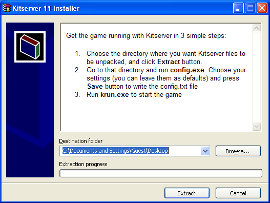
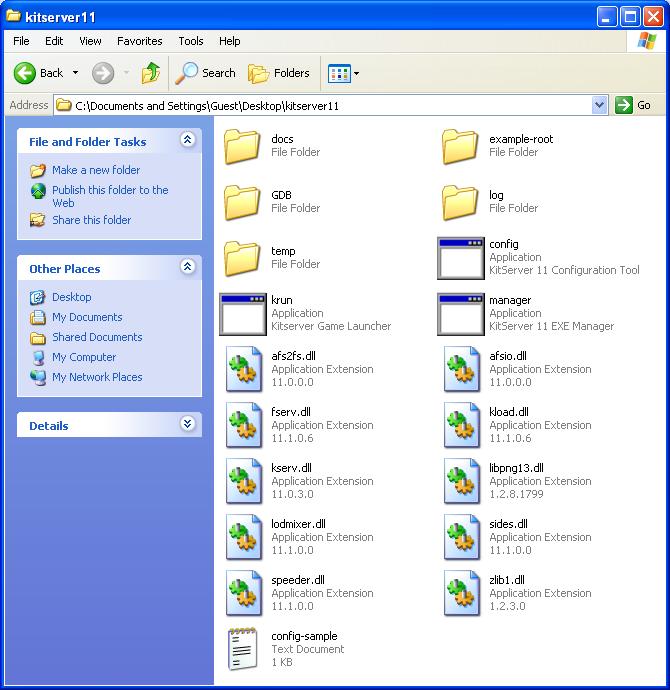
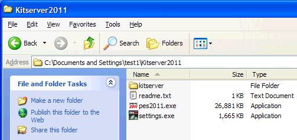
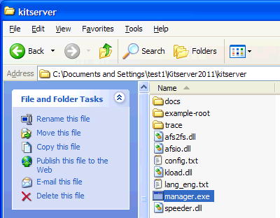
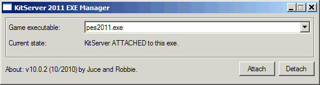
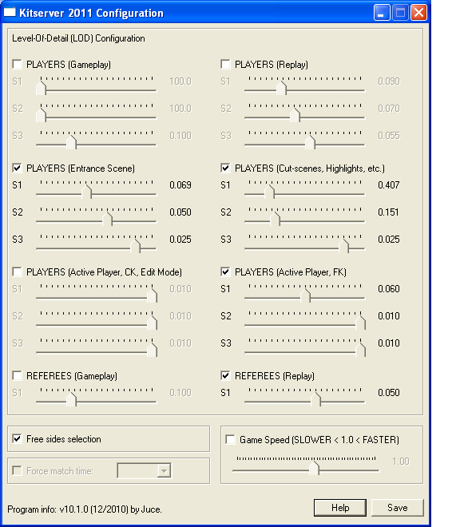
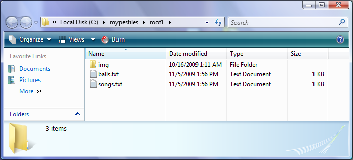
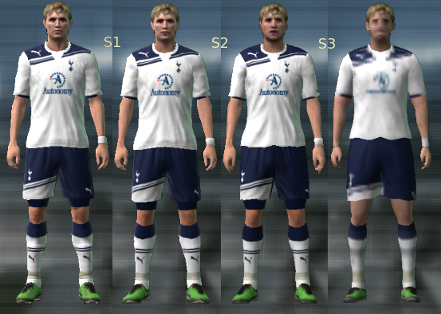
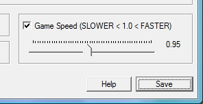
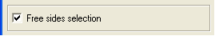

Usually, the most up-to-date version of this documentation, and the translations to many languages, are located here: http://kitserver.ath.cx/docs/. Documentation for Kitservers 5-8 and Kitserver 2010 can also be found there.
Kitserver 2011 is an add-on program for Pro Evolution Soccer 2011 (and Pro Evolution Soccer 2011 DEMO). It is a loader and manager for various modules, where
each module is built as a (typically) independent DLL containing logic to
enhance the game in particular aspect. While originally the Kitserver was
developed to "serve" kits Pro Evolution Soccer 3, a lot more functionality
has been added over the years.
Below is a quick summary of the available features. Follow the link in the left column to get more details about a particular module.
If you are new to Kitserver, please make sure you read the installation instructions.
| AFS2FS 10.0.5 | afs2fs.dll | Manage AFS (.img) game content using files and folders: much easier and quicker to install/remove patches, without the need modify *.img files. |
|---|---|---|
| LOD Mixer 10.1.0 | lodmixer.dll | Fine-tune LOD configuration for players and referees. |
| Speeder module 10.0.4 | speeder.dll | Increase or decrease gameplay speed. |
| Sides module 10.0.5 | sides.dll | Allow free side selection during matches. |
With XP and Vista, and now Windows 7 having more emphasis and enforcement of file ownership and different user rights, and promoting the use of "Standard User" accounts, i realized it was time to change the installation routine slightly, compared to the previous versions of Kitserver. So, first new thing: you have a more traditional installer now, well it's just a self-extractable archive with some logos :) Run it, and it will ask you where you want your kitserver files extracted:
You can leave the default directory specified in the installer, or you can put in your own. The important thing is that you unpack the files into a place where you have full control over the files (your HOME directory is one example of that.) This will ensure that you won't run into any File Virtualization surprises on Vista, and also that you will NOT need administrative privileges to run the game with Kitserver.
Now go to that directory that you installed your kitserver to. You will see there a folder named Kitserver2011. Open that folder, you should see something like this: 
Now, copy the two executables from your game folder to the Kitserver2011 folder - pes2011.exe and settings.exe. (Depending on your Windows settings, you may see them as simply pes2011 and settings - with file extensions hidden. In fact, by default the file extensions of known file types are hidden, as you can see on the screenshot below). So, now it should look like this:
Almost there! A couple more steps and we'll have the game running with Kitserver.
Now open the kitserver folder and run the manager.exe program.
This was previously called setup.exe, but Windows thinks that any application named setup.exe wants administrative access, even though the kitserver's setup actually doesn't. Also, the name "setup" was always slightly misleading, so i decided to rename it to more neutral - manager - because it manages the attachment of kitserver to the game EXE files.
Now select the game executable (it should actually already be preselected). You can also select your settings.exe (if say you wish to by-pass the quality checks, for example. Otherwise, it is not necessary). Once you select the files, click "Attach" button. What this does is it "connects" the kitserver to the game: now whenever you start the game (using that particular game EXE), the Kitserver DLLs will be loaded into memory. If all went well, you should see a picture like this:
If you decide that you don't want to use Kitserver any longer, run manager.exe again and click "Detach", and it will disconnect the kitserver from the game EXE. (This is useful when troubleshooting crashes: you can always temporarily detach Kitserver from the game to verify that the game runs fine without it. And then re-attach the Kitserver later). You can also install/remove Kitserver only for one exe by setting the other one to "no action".
Now for one last step, before we can run the game with kitserver:
We need to make sure there exists a file called config.txt in the kitserver folder.
That's it. You're ready to launch the game.
REMEMBER: you need to start the game using the game EXE (pes2011.exe) in Kitserver2011 folder, because that is the one that has the kitserver attached to it.
For folks who had been using kitserver for some time, it is worth noting that it is still possible to install the kitserver the "old" way: in the game folder. Everything would still work fine, as long as you do everything as Administrator: run config.exe, run manager.exe, and you have to run the game as administrator too. I would honestly not recommend doing that, but instead adopt the new way. It is safer and you don't need to worry about administrative privileges, and you don't run into File Virtualization issues which can lead to nasty surprises, and many hours spent muttering things like: "why does my config.txt show correct setting, but in the game i don't see the effect? What is going on?!!..."
Uninstall is very easy: just delete the Kitserver2011 folder, and that's it.
Kitserver
doesn't write into system folders, or anything of that sort, so removal is very simple.
Also, it is worth reminding that you can always temporarily detach the kitserver from the game exe, and then re-attach it back, by using the manager program (as described in 2.1 section above). This is useful when suddenly you get game crashes, and you are not sure whether Kitserver is at fault, or there is some other reason.
From time to time, Konami releases patches to the game. There is already 1.01 and 1.02 patches, and there probably will be more released in the future. When you install these patches, you get a brand new game executable (pes2011.exe) among other things. It is important to realise that Konami patch doesn't now about your Kitserver installation, and therefore the game EXE in your Kitserver2011 folder will still be the old one.
So what you need to do is copy the new game EXE over to the Kitserver2011 folder, then run the manager.exe program and attach the kitserver to the new EXE. Assuming, of course, that Kitserver supports the new EXE, that's all there is to it. Now you can again start the game from Kitserver2011 folder.
The kitserver manager.exe program can also be run without GUI - in a so-called batch or command-line mode. This can be useful, if kitserver is part of a bigger patch, which contains an installer, and typically the last step of the installer is to attach kitserver to the game EXE file. This can be accomplished by running the manager like this:
manager --install --gfile={game-exe} --sfile={settings-exe}
manager --remove --gfile={game-exe} --sfile={settings-exe}
Example:
manager --install --gfile=..\pes2011.exe --sfile=..\settings.exe
Kitserver uses a file called config.txt as its main configuration file. A lot of things are specified there, including which modules to load, what settings those modules should use, and etc. Go to your kitserver folder and you should see a file called config-sample.txt. (I gave it a different name on purpose: so that those who upgrade their kitserver installation don't accidently overwrite their existing config.txt). If you aren't upgrading then the chances are that you don't have an existing config.txt, in which case just rename (or copy) the sample config into config.txt (or run configuration tool, click "Save" and it will do the same thing). Otherwise you may want to compare the sample config with yours and see if you need to make changes to your config: such as add new modules in the [kload] section, for example.
Remember: if you don't have config.txt in your kitserver folder, kitserver will not do much. But it will log the fact that it couldn't find the config.txt. So if you think kitserver doesn't work for you, check the pes2011.log file for error messages
The main configuration file for kitserver - config.txt - is located in the kitserver folder. If you don't have it there - re-read the end of Install section (2.1) above. Here is an example of what can be in config.txt:
[afs2fs] img.dir = "c:\mypesfiles\root1" [kload] dll = afsio.dll dll = afs2fs.dll dll = speeder.dll dll = sides.dll
Each module can have its own configuration section, which starts with [module-name], and typically has one or more options following it. Now, normally you wouldn't need to modify config.txt file, except for the cases, when you need to modify the behaviour of a particular module (DLL), or enable/disable such DLL.
To disable a particular module - just comment out the corresponding line in the [kload] section by putting a '#' symbol at the beginning. (Or you can delete that line altogether.)
The order of the DLLs is important. In particular: afsio.dll must be loaded before afs2fs.dll. Only in very rare situations you should try re-arranging the DLLs.
Formerly known as lodcfg.exe (it used to be the GUI tool for LOD mixer only, but now it covers other configuration options as well), this simple GUI program allows to modify some configuration settings in config.txt. It's a helper tool and all that it does, you can also do manually, by editing config.txt in your favourite text editor. In fact, some things you can only do manually - like adding and removing modules (DLLs). But for simple things - like changing game speed or fine-tuning the LOD levels, it's faster and easier to just launch config.exe, quickly adjust things, then click [Save] button, and you're done.

This module allows to organize your BIN-files into folders on disk, instead of inserting them into AFS(*.img) files, which is sometimes a pain, and may require a lot of extra disk space.
Several people over the last few years had suggested similar solutions, but ultimately it was Str@teG who kept talking about this idea of organizing BINs into folders, and eventually i decided to just go ahead and do it. So now this is realized in the this module - afs2fs.dll. From personal experience, i know that people are sometimes reluctant to install big patches that require an AFS-rebuild, not because it's particularly difficult or anything, but because it can be time-consuming and disk-space-hungry. With afs2fs, this is now very easy: you just put the BIN into correct folder and that's it. And, of course, there are no size constraints - the bins can be as large as needed!
The module is also handy, when you want to try a patch without risking totally destroying the content that you already have. Putting a new patch into a separate AFS-root and modifying config.txt is all you need to get it going. Removal as easy too: delete the correspoding "img.dir" line in config.txt, and then delete the AFS-root folder. Multiple patches is no longer a management nightmare :). (See more info on AFS-roots in the sections below)
Start by choosing a location where you would be putting your files. For example, let's take c:\mypesfiles\root1. This will be your so-called AFS-root. Inside that folder, create a folder called img. (This is very important that you have the folder named "img", since the game relies on particular names). Then, inside img, create folders, as needed, named - dt00.img, dt01.img, dt0b.img, and so for. That's where you're going to be putting the BIN-files.
It's important to name the folders correctly: a folder must have exactly the same name as the corresponding AFS-file. For instance, if you call a folder dt00, instead of dt00.img, things will not work.
This is how my img folder looks:
In general, you can name the files whichever way you want, but you must follow one rule: there must be a BIN number in the name, and it must be preceded by an underscore character ('_'). Also, the filenames CANNOT be longer than 63 characters.
Examples of correctly named files:
unknown_317.bin
goalnet_41.bin
ball_9.bin
unknow_9 (.bin extension is optional)
music_11.adx (a file can have a different extension: .adx is typically used for music and sound files)
Examples of incorrectly named files:
unnamed10.bin - no underscore symbol before the BIN number.
face.bin - no BIN number.
By default, the AFS2FS module will not search any "special" default paths. Instead you must specify your AFS roots explicitly: In [afs2fs] section of config.txt, you can speficy the location of your root, which can be anywhere on your hard disk. You can also have multiple roots, which is very useful if you have several patches, and you don't want to lose track of which BINs came from which patches (so that you can easily uninstall a patch by just deleting its root folder).
Here is an example with 3 different roots are configured:
[afs2fs] img.dir = "c:\mypesfiles\root1" img.dir = "patch-RPL" img.dir = "afs-root3"
The order of the roots is significant, when it comes to resolving "collisions". Say, you have a dt0b.img/ball_9.bin in the second root (patch-RPL), and dt0b.img/superball_9.bin in the third root (afs-root3). Even though the files are actually named differently, they intend to replace the same BIN - #9 from dt0b.img, and therefore we have a "collision". The rule is simple: the lower root in the list wins. Which means that in this situation, the dt0b.img/superball_9.bin file will be used, since its root is listed last in the [afs2fs] section.
IMPORTANT thing to remember: The root is the folder that contains "img", not the "img" folder itself. In other words, if the full pathname is c:\mypesfiles\root1\img", then in the config.txt you should have: img.dir = "c:\mypesfiles\root1"
When replacing songs with AFS2FS, it is also possible to change the title of the song and the artist's name, by using a songs.txt map-file, which should be put into afs-root folder.
Here's an example of such songs.txt file:
# Song names map # Format: <binId>, "<title>", "<artist>" # Note that double quotes are required. 44, "I'm mad about you", "Sting" 45, "Вне зоны доступа", "Город 312"
IMPORTANT: as with all other map-files and config files that Kitserver uses, the encoding of the file needs to be Utf-8 or Unicode, especially of you use non-latin symbols - like in the example above. (ANSI encoding is ok if you only use Latin-1 characters.)
Similarly with balls, if you are replacing ball BINs, you probably want to adjust their names too. One easy way to do that is to use a balls.txt map-file, which should be put into afs-root folder:
# Ball names map # Format: <ball-number>, "<name>" # Note that double quotes are required. # (Ball numbers go from 1 to 16) 8, "Nike-ball Blue" 9, "Мячик плохонький"
It is worth noting that each afs-root folder can have its own songs.txt and balls.txt. Since each afs-root may contain music files and ball files, it makes sense to tie the names to them this way. If you have multiple afs-roots(as when for example you have multiple patches, and each patch uses its own afs-root), then the "conflicts" are resolved the same way as they are with BINs (see above for details). In other words, if one afs-root has name for song 11, and another afs-root has a name for song 11, then whichever afs-root is specified lower in the list (in config.txt) - will win.
Here's a picture to clarify where songs.txt and balls.txt files should be placed. In this case "root1" is my afs-root: 
LOD-Mixer is the module that allows to fine-tune some aspects of PES2011 graphics engine.
These settings can be configured manually in kitserver's main
configuration file (kitserver/config.txt), but it is probably easier
to use Kitserver's configuration tool
(config.exe).
LOD (Level-Of-Detail) algorithms are used in graphics engines to improve both the picture quality and the speed of rendering, when drawing objects at various distances from the viewer. The basic idea is that when the object is close to the camera, one (very detailed) model is used. When it is far - another, simpler model with less detail is used instead. It's much faster to render a low-poly model of the object, and it typically looks better, when drawn in small size, because it suffers less from aliasing. In theory, at least, that is how it is supposed to work.
PES 2011 has 4 different ways it can render a player. The choice of the rendering used at any given moment depends on several circumstances: how far the player is from the camera, is this an active player (currently controlled by human), is this a gameplay rendering or a replay, and so for. Here's the picture that shows how these LODs differ visually:

Notice the S1, S2, S3 labels, which are placed among the four renderings. You can think of them as "switches" from one type of rendering to another. (For instance, S1 controls when the game engine switches from drawing a player at full detail to drawing the same player at slightly less detail.) This is what the S1,S2,S3 means that you see in the configuration tool UI.
Unfortunately, PES series had always suffered from an overly- conservative LOD configuration, where the switch to low-poly models would happen way too soon, and that would result in various visible artifacts. In PES4-PES6, examples were: balding players, and missing details on kits. In PES2008-PES2011, the players and referees appear to have blurred generic faces, once they move slightly away from the camera.
So, if you have a good PC and a powerful videocard with GPU cycles to spare, you may fancy tuning the LOD sligtly to make the game engine display more detailed models, even when they players are a bit away from the camera (Animation quality seems to be affected by this as well). To do that, move the sliders to the right.
Also, if on the contrary, your machine is struggling to run the game at a smooth frame rate, you can try moving the LOD sliders in the opposite direction - thus making the engine switch to the low-poly models sooner than normal. This may improve the framerate, although at the expense of picture quality. To achieve that, move the sliders to the left.
Configuring LOD well takes time and is best done via trial-and-error method. (If it was easy, it would've been probably done right in the first place!) I'd like to mention a few considerations here that should help you with LOD configs.
Myth #1: if I move all sliders to the right,
I will always have the best picture.
That is simply not true. You will get the most detailed and expensive
rendering, yes, but NOT NECESSARILY the one that looks the best.
More-detailed objects at far distance actually look worse than
less-detailed ones, because of the aliasing effect.
Myth #2: my GPU (video card) is really good, surely it can handle anything thrown at it.
That is not true either. Current generation of games has become
quite sofisticiated and resource-hungry. GPU and CPU are working hard to
process the rendering, physics, AI logic. 60 FPS is the typical minimum
frame-rate at which a game needs to run, in order to provide nice and
smooth gameplay. That means the rendering of the entire scene must fit
into 1/60th of a second and still leave some time for other tasks to be
done. (Physics, in particular is often run at the same rate as rendering,
so that the picture doesn't suffer from noise.) To make sure rendering
time doesn't escalate dramatically as more objects are rendered, LOD is
often employed as an optimization technique. By moving all sliders to
the right, you are effectively disabling the LOD algorithm and telling
your GPU: "render all objects on the screen at the most possible detail.
And if you fry while doing that, i don't care!". Ok, so maybe it's
not a funny example, but you get the point.
Now, coming back to our game, as i said, in many cases, you only really need to adjust 1 slider or two to get the desired effect, and still keep the smooth frame-rate. Let's consider some examples:

These are just some examples. You might notice some other artifacts that you'd like to fix. The main thing is: experiment with your LOD configuration, don't just blindly set everything to maximum quality - on most systems that will result in stuttering and loss of frame-rate, because your GPU (and CPU also) gets a lot more work to do. In many cases, adjusting just one or two sliders gets the effect you want, without hurting the frame-rate.
Not everyone is satisfied with the pace of the gameplay. It must be said that it is not an easy thing to get this aspect of simulating a football match correctly. Many factors are in play, and a lot depends on hardware. Personally, i think Konami did a decent job at that, but many folks find the gameplay too fast.
Several techniques of slowing the game down exist, and not one of them is perfect, but all work to some extent. The speeder module basically slows down the clock, sort of tricking the game into running slower. This is not an ideal solution either, but if a small adjustment is used, it can still look real, play well, and actually provide a smoother gameplay. Don't consider it a silver bullet though. It might work well for you, but it also may not deliver everything you had hoped for :) (One side-effect, for example, is that if you set your match time to 10 minutes, but you have the Game Speed set to 0.9, the actual match time will be approximately 11.1 minutes.)
It is possible to decrease the game speed and also to increase it. The value 1.0 gives the default unchanged speed. Less than 1.0 - slower gameplay, greater than 1.0 - faster gameplay. It is not advised to use values lower than 0.7, because the music/commentary starts to break up. Also values larger than 2.5 are not supported. It is already ridiculously fast with 2.5!.
Use configuration tool to adjust the game speed:

You can also set the game speed adjustment manually in config.txt, by using count.factor setting:
[speeder] count.factor = 0.95
This module allows to change sides freely during non-exhibition matches. Useful, if you like to play tournaments with your friends, and want them to play for your opponents, instead of always playing against the CPU.
By default, free selection of sides is disabled. To enable it, click
the Free sides selection checkbox in configuration tool, and press
[Save] button.

Or, as always, you can edit the config.txt file, "sides" section, and set free.select option to 1, like shown here:
[sides] free.select = 1
Programming: juce, Robbie and Stelios
Beta-testing: members and guests of Evo-Web and PesWe.com forums.
Kitserver license is BSD-style license that can be found here: license.txt